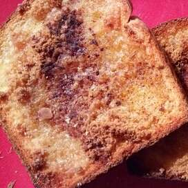

Toast

Description
igredients
- milk
- flour
- butter
- ham
- bread
Steps
- cook the milk until it is at 110 degrees
- when the milk is cooked mix it with some flour
- now you can put some butter on the bread
- finally you put the ham on the toast obviously
you are vegetarian, you can make it
with other products than ham